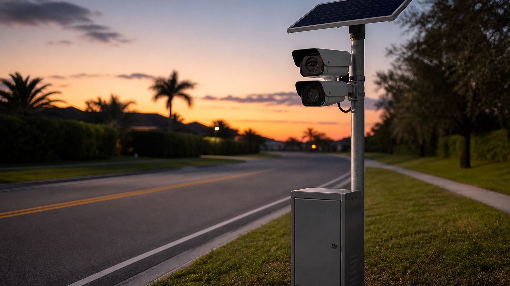

Flock Camera Misuse in Florida: Who Queried Your Plate?

Automated license plate readers are now bolted to poles all over Central Florida, quietly photographing every plate that rolls past. Most drivers never think about them — until a traffic stop, an arrest, or a news story about an officer running plates he had no business running. Here's the part few people know: every single query of a Flock camera database is logged, and in a Florida criminal case, the defense can often get those logs.
How Flock and ALPR Cameras Work in Florida
An automated license plate reader (ALPR) photographs passing plates and checks each one against "hot lists" — stolen vehicles, wanted or missing persons, or a plate an officer has manually flagged. A match pushes an alert to nearby officers. Under FDLE's CJJIS Council ALPR guidelines, officers are trained to visually confirm the plate actually matches the alert and verify the hit is still active before stopping the car, because misreads and stale entries happen. I saw that firsthand as a Florida Highway Patrol trooper: the technology points, but a human has to verify.
Florida law also builds in a hard limit. Under F.S. 316.0777(2)(b), an ALPR may not be used to issue a notice of violation or a uniform traffic citation. The camera itself cannot mail you a ticket — every real-world consequence runs through an officer whose stated basis for the stop can later be tested in court.
What Counts as Unauthorized Access — and Why Every Query Leaves a Record
Agency policies and CJIS-style rules restrict these databases to legitimate law-enforcement purposes. Running a plate for personal reasons isn't sloppy paperwork — it can be a felony. Willfully accessing a computer system without authorization violates F.S. 815.06, and a public servant who misuses official records with corrupt intent can face official misconduct charges under F.S. 838.022.
A Polk County case shows how this plays out. According to an arrest affidavit reported by WFLA, a Haines City police officer used Flock cameras to look up his estranged wife's plate on 717 occasions between September 2024 and June 2026, typing official-sounding justifications like "Drugs/Narcotics" and "Wanted Person" into the query-reason field. He was charged under both statutes above. Notice what made the case possible: investigators reconstructed his entire search history from Flock's own audit logs. Sarasota's police department likewise ran an agency-wide audit of Flock usage after discovering unauthorized searches, according to reporting on resident protests there.
What the Audit Trail Records
Every Flock login and query captures the user who ran it, a timestamp, the plate searched, and a stated reason for the search. Agencies use these logs to catch misuse — and the defense can seek the same records in a criminal case.
Discovery: How the Defense Sees Who Queried Your Plate
Florida Rule of Criminal Procedure 3.220 — a rule of procedure, not a statute — gives defendants broad discovery rights once they elect to participate. Its categories reach electronic records, and specific demands or subpoenas can reach the ALPR audit log itself. Under F.S. 316.0777, ALPR data containing personal identifying information is confidential and exempt from public records requests, but it remains disclosable to criminal justice agencies and to a person about their own plate — which is exactly the posture of a defendant whose stop began with a plate hit.
In practice, the defense traces the chain backward: the arrest report says the stop began with a plate hit, so counsel demands the query records showing who ran the plate, when, and for what stated reason, then compares that record against the officer's narrative. Prosecutors don't always hand this over quickly — discovery delays are common — but the records exist, and F.S. 316.0778's statewide retention schedule governs how long agencies may keep them, which is a reason to ask early.
Why the Audit Trail Matters — and Its Honest Limits
The audit log matters for two reasons. First, lawfulness of the stop: a plate hit is only as good as the verification behind it, and Florida courts ask whether the officer had a reasonable basis at the moment of the stop. A Flock hit alone isn't automatically probable cause. Second, credibility: if the query record shows a search that doesn't line up with the arrest narrative — wrong time, wrong user, or a stated reason that doesn't match the story — that mismatch becomes cross-examination material and can support a motion to suppress.
But the limits are real. In State v. Laina, 175 So. 3d 897 (Fla. 5th DCA 2015), a database check showing the registered owner's license was suspended supplied reasonable suspicion for a stop — a clean database hit generally holds up. And Florida's Supreme Court once held in Shadler v. State, 761 So. 2d 279 (Fla. 2000), that evidence could be suppressed when an arrest rested on an erroneous state driver-license record — but the Legislature promptly overrode that decision by enacting F.S. 322.202, which provides that evidence shall not be suppressed merely because the state's motor-vehicle records turn out to be wrong, so long as the officer relied on them in an objectively reasonable way.
A Records Problem Is Not an Automatic Dismissal
Under F.S. 322.202 and the good-faith line of cases, a flawed database record rarely wins suppression by itself. The audit trail informs a defense strategy — testing probable cause and officer credibility — rather than guaranteeing an outcome.
Common Misconceptions — and the Bigger Picture
Three Things Drivers Get Wrong About ALPR Evidence
- Flock cameras don't mail tickets. F.S. 316.0777(2)(b) forbids using an ALPR to issue a citation; if a stop happened, an officer made a judgment call that can be examined.
- Orange County isn't Orange City. ALPR deployments are agency-by-agency, so which department's cameras and policies apply depends on exactly where the hit occurred.
- A database error isn't a get-out-of-jail card. It's a thread to pull on — about verification, timing, and credibility — not an automatic suppression.
This is also a live statewide debate. CNN reported in August 2026 that Flock is requiring all law-enforcement customers to adopt an "Audit Assistance" tool that flags abnormal search behavior, and is recommending a seven-day default retention with an "Evidence Mode" for active cases — after roughly 50 instances nationwide of officers charged or accused of misusing the cameras. WUSF has reported that the issue has even reached Florida's gubernatorial race, with one candidate calling for a full pause on Flock contracts over constitutional concerns. The takeaway for Floridians is simpler: database policing leaves a paper trail, and criminal discovery is one of the few tools that lets an ordinary person see it.
How a Criminal Defense Attorney Can Help
If your Orange County case began with a license plate reader hit, an experienced defense attorney can demand the audit logs through Rule 3.220 discovery, compare the query records against the arrest narrative, and evaluate whether the stop rested on a lawful, verified basis. As a former State Trooper and Deputy Sheriff, I know how these alerts reach a patrol car, what verification is supposed to happen before the lights come on, and where the paper trail tends to contradict the story.
Questions About License Plate Reader Evidence in Your Case?
If evidence in your Florida case traces back to a license plate reader hit and you have questions about how that data was accessed, contact Lotter Law in Orlando for a free consultation.
Contact Lotter Law at 407-500-7000 for a free consultation.

Jeff Lotter
Criminal Defense Attorney | Former State Trooper
Jeff Lotter is an Orlando criminal defense attorney and former Florida Highway Patrol trooper. He uses his law enforcement background to build stronger defenses for clients facing criminal charges.